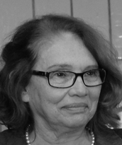

Advogada, escritora e ativista cultural, Mary Sônia Mattos Valadares é uma das figuras femininas mais representativas da luta pela criação do Estado do Tocantins. Filha de Saldanha Dias Valadares e Heloisa Matos Valadares, formou-se em Ciências Jurídicas e Sociais pela Universidade Católica de Goiás, em 1971. Durante sua juventude em Goiânia, teve papel de destaque como Secretária-Geral da CONORTE (Comissão de Estudo dos Problemas do Norte Goiano), fundou a União Tocantinense e foi membro da Casa do Estudante Norte-Goiano (CENOG), sempre atuando em prol do movimento pró-emancipação do norte goiano.
Residindo em Palmas, dedica-se à advocacia e à promoção cultural. É funcionária do Tribunal de Contas do Estado do Tocantins, foi Presidente do Conselho Municipal de Cultura de Palmas, e integra diversas instituições culturais, como o Instituto dos Advogados do Tocantins, o Instituto Histórico e Geográfico do Tocantins e a Academia Tocantinense de Letras, da qual foi presidente em 2000 e onde ocupa a Cadeira 13, cujo patrono é João de Souza Lima. Reconhecida como ensaísta, cronista, pesquisadora, educadora e memorialista, Mary Sônia é frequentemente citada em obras que narram a história do Tocantins, como Breve História do Tocantins e de Sua Gente, de Otávio Barros; História Didática do Tocantins, de Liberato Póvoa; e Tocantins – Eu Também Criei, de José Carlos Moura Leitão.
